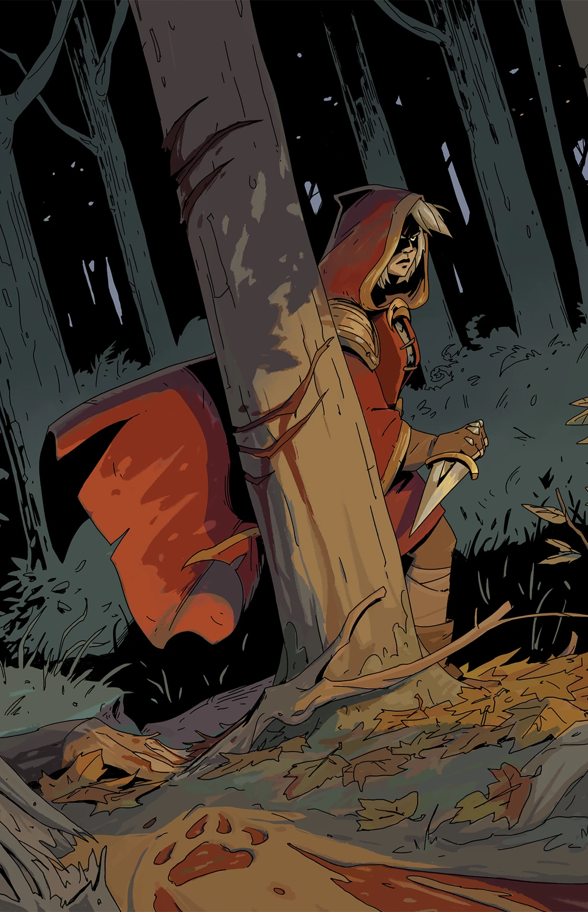
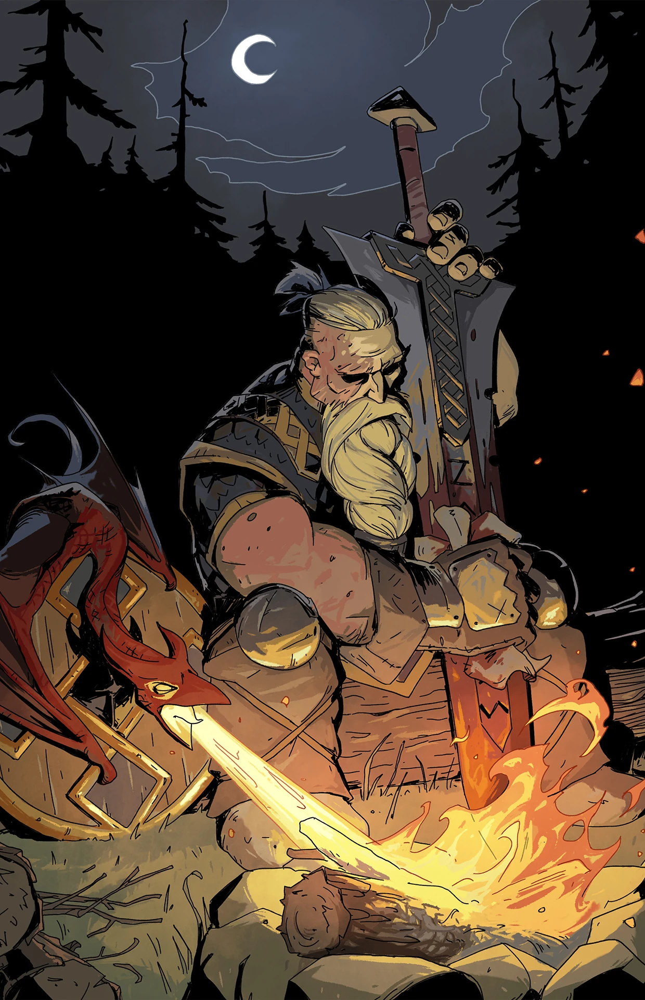
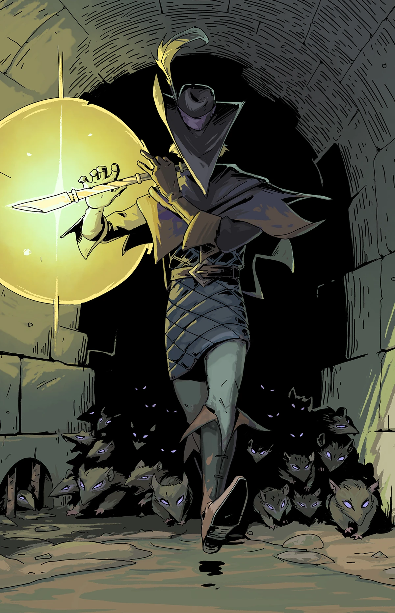
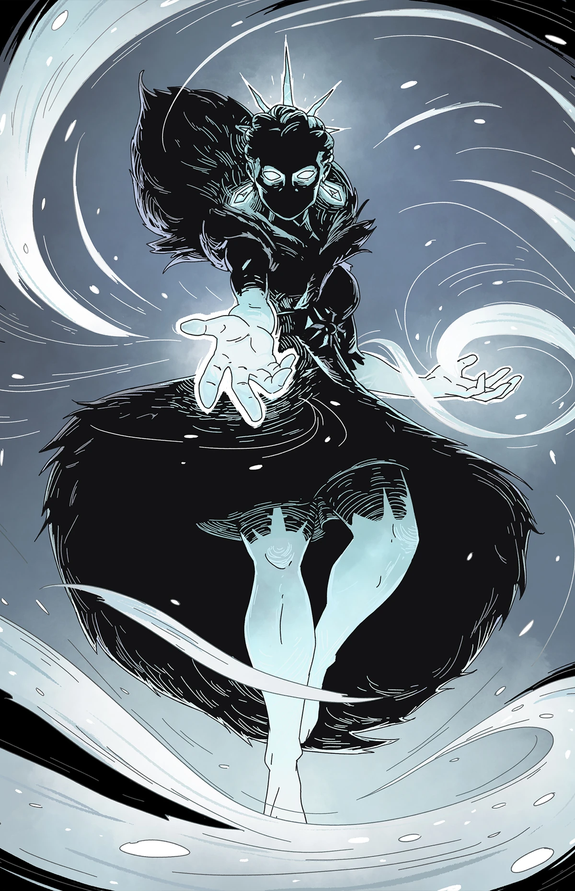
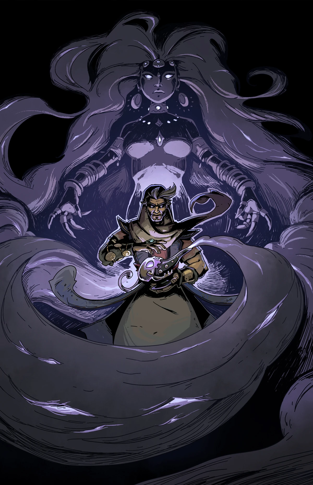
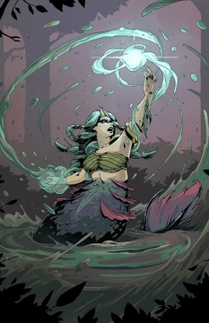
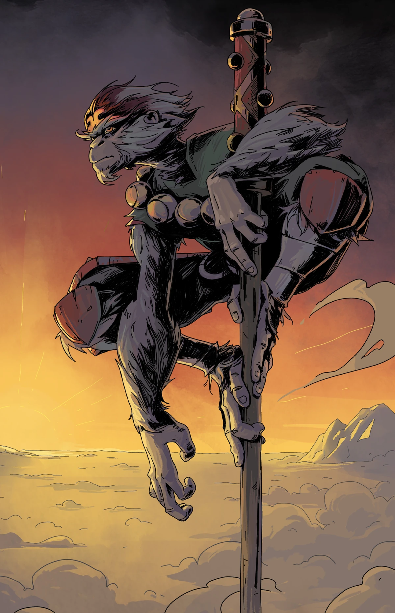
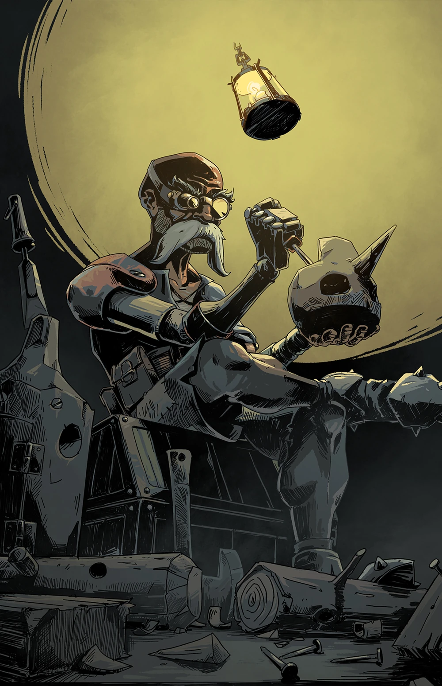

Tras sobrevivir al ataque del Lobo Feroz, Scarlet fue infectada por la maldición de la licantropía. Ahora utiliza sus dagas durante el día y su fuerza bestial bajo la luna para masacrar a las pesadillas que acechan Reverie.

El legendario rey de los gautas carga con la culpa de haber llevado a su pueblo a la perdición. Empuña una espada rúnica y es acompañado por el último descendiente de los dragones que una vez juró exterminar.

Exiliado de Hamelín tras ser traicionado por sus habitantes, este músico utiliza sus melodías mágicas para guiar a una horda de ratas leales. Su música ya no trae alegría, sino una sinfonía de muerte para sus enemigos.

Antaño una soberana de corazón cálido, el dolor de una pérdida la transformó en un ser de hielo eterno. Ahora vaga por los campos de batalla congelando todo a su paso con un poder elemental devastador.

Un audaz ladrón que encontró una lámpara mágica en una cueva de tesoros prohibidos. Aunque su genio puede concederle deseos increíbles, Aladinn debe luchar con astucia para no ser consumido por la codicia de su propia magia.

Una criatura de las leyendas acuáticas que fue maldecida con una forma híbrida. Utiliza una orbe de agua mágica para proyectar ataques a distancia, manteniendo a las pesadillas lejos de los lagos que juró proteger.

Tras ser liberado de su prisión bajo la montaña, el Rey Mono busca redención enfrentándose a la Pesadilla. Su dominio del bastón y su capacidad para crear clones lo convierten en un guerrero impredecible y feroz.

Un anciano carpintero que perdió a su creación más amada ante la oscuridad. Utilizando su ingenio y herramientas, ahora construye autómatas de combate para luchar en una guerra que nunca pensó tener que librar.
Para más detalles, visita la: Wiki de Héroes